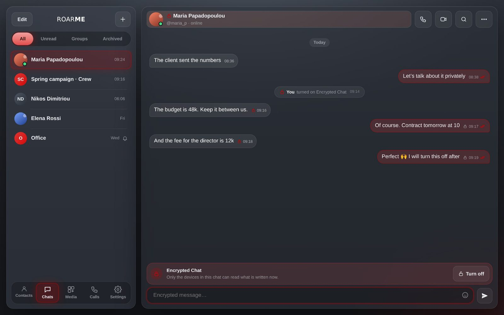

Experiment 01 Live · beta
ROARME
The messenger for teams. Built for the way a crew really talks: fast, with big files, and sometimes in private.
- No phone number. Just your @username.
- RoarTransfer. Files up to 5 GB, with one short link.
- Encrypted secret chats. On when it matters, with one tap.
